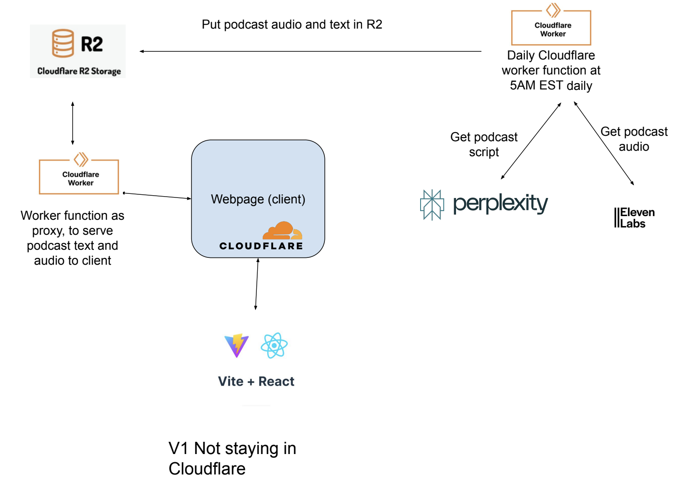

Hark-AI is an AI podcast service that creates daily podcasts with up to date news. The app uses Perplexity's completions
API to generate updated podcast scripts which are then used to generate a podcast using ElevenLabs text to speech
API. The app is hosted on Cloudflare here. Uses Cloudflare's built database service R2 and scheduled workers to
populate the DB daily with podcasts.
The infrastructure utilizes Cloudflare's built in solutions for ease of getting off the ground as I chose Cloudflare
for my host. I have experience with AWS infrastructure so I will compare the offerings to the corresponding AWS offerings.
Cloudlfare offers an S3 like storage called R2 which is where podcast scripts and audio files are stored. Cloudflare also
offers lambda function like scheduled workers called simply Cloudflare Workers. I have a worker setup to populate the R2
database daily with a new podcast capturing that days news.

I will continue developing Hark-AI and eventually it will offer completely personalized podcasts sourcing information from
sources specified by the user, so they can have exactly the right podcast for what their moment demands. Examples could include
a 25 minute podcast on politics and world news for my morning commute, a 10 minute podcast about Manhattan for my bathroom break
and a 15 minute podcast on movie and tv-show news for when I get home, sourcing the information from my favorite celebrity gossip
news sources.
I will also likely move from Cloudflare to AWS as AWS has more services, however in the current simple state Cloudlfare provides
good service at a great price.